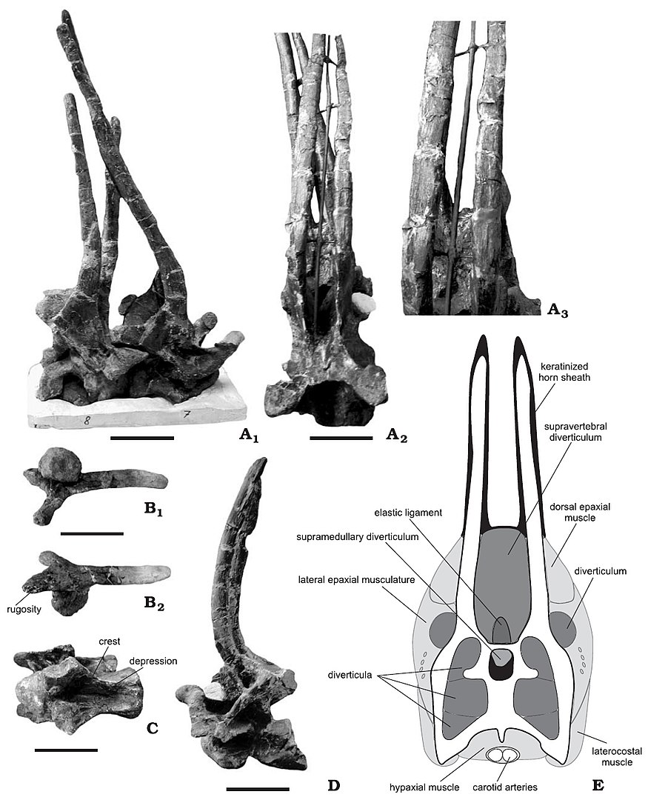

Amargasaurus
Loài Sauropod có gai của kỷ Phấn trắng
Tổng quan
Kỷ
Cretaceous
Họ
Dicraeosauridae
Chi
Amargasaurus
Dài
9.5 m
Nặng
3 tấn
Thức ăn

Amargasaurus là một chi khủng long sống vào thời kỳ Creta sớm tại nơi ngày nay là Argentina. Bộ xương duy nhất được phát hiện năm 1984 và mô tả năm 1991, với loài duy nhất là Amargasaurus cazaui.
Nguồn: wikipedia.org
Phân bố
Khu vực Nam Mỹ

Thông tin thêm về Amargasaurus
Tên khoa học
Xuất phát từ tiếng Hy Lạp cổ đại, Amargasaurus có nghĩa là "thằn lằn La Amarga", phất âm ah-MAR-gah-SORE-us
Kích thước
Amargasaurus là một loài động vật lớn, nhưng nhỏ đối với một con sauropod, dài khoảng 9-10 mét và nặng khoảng 3 tấn.
Ngoại hình
Amargasaurus có cổ và đuôi dài, sau cổ và trên lưng có những hàng gai dài đến 60cm, có thể được sử dụng để bảo vệ chúng khỏi các con thú săn mồi.
Một giả thuyết thay thế, hiện được ủng hộ nhiều hơn, cho rằng những chiếc gai có thể đã tạo thành một giàn giáo hỗ trợ một cánh buồm bằng da, chúng có thể đã được sử dụng để trưng bày, chiến đấu hoặc phòng thủ. Amargasaurus được xem là một trong những loài khủng long kỳ lạ và độc đáo.
Chế độ ăn
Mặc dù tính cách khá hung dữ nhưng Amargasaurus được cho là loài ăn thực vật, chủ yếu là cây và cỏ. Nó chia sẻ môi trường của mình với ít nhất ba chi sauropod khác, có thể đã khai thác các nguồn thức ăn khác nhau để giảm sự cạnh tranh.
Amargasaurus có thể kiếm ăn ở độ cao trung bình, thể hiện qua hướng của tai trong và khớp đốt sống cổ của nó, gợi ý vị trí thông thường của mõm cách mặt đất 80 xentimét (31 inch) và chiều cao tối đa là 2,7 mét ( 8,9 feet).
Kỷ nguyên
Amargasaurus được phát hiện trong đá trầm tích của Hệ tầng La Amarga, có niên đại từ giai đoạn Barremian và Aptian muộn của Kỷ Phấn trắng sớm, khoảng 129-122 triệu năm trước đây.

Phân bố
Khu vực Nam Mỹ: Amargasaurus là loài khủng long sống ở môi trường sống trên cạn, được tìm thấy ở Argentina và những khu rừng lân cận ở Nam Mỹ.
Khám phá
Bộ xương duy nhất được phát hiện năm 1984 và mô tả năm 1991 bởi nhà cổ sinh vật học nổi tiếng người Nam Mỹ Jose F. Bonaparte, với loài duy nhất là Amargasaurus cazaui.
Tại sao lại có gai?
Như với những con khủng long được trang bị tương tự (như Spinosaurus và Ouranosaurus ), có nhiều khả năng khác nhau: gai có thể giúp ngăn chặn kẻ thù, chúng có thể có vai trò nào đó trong điều chỉnh nhiệt độ (nghĩa là, nếu chúng được bao phủ bởi một vạt da có khả năng tản nhiệt), hoặc rất có thể, chúng có thể chỉ đơn giản là một đặc tính được lựa chọn tình dục (những con Amargasaurus đực với gai nổi bật hơn hấp dẫn đối với con cái trong mùa giao phối).
Sự tuyệt chủng
Thông tin về sự tuyệt chủng của Amargasaurus chưa được ghi nhận. Tuy nhiên, giống như hầu hết các loài khủng long khác, Amargasaurus đã tuyệt chủng vào cuối kỷ Phấn Trắng, khoảng 66 triệu năm trước khi bị tác động bởi sự kiện tuyệt chủng hàng loạt lớn nhất trong lịch sử Trái đất, có thể do va chạm của một thiên thạch lớn hoặc sự thay đổi khí hậu đáng kể.